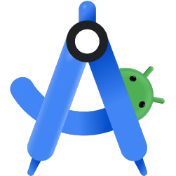
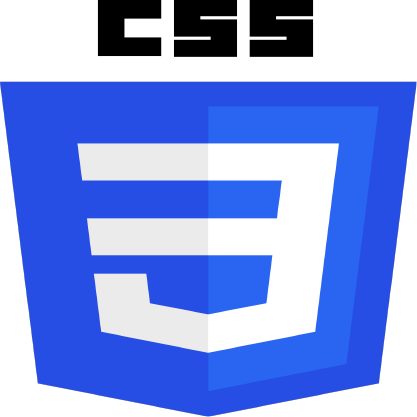

Formación
Título Escolar de Bachiller - Virgen del Carmen, Jaén
2019 - 2021
Curso de Programación de Videojuegos con GameMaker - Universidad Popular, Jaén
2017 - 2019
Curso Académico de Inglés - Centro Británico Paseo de la Estación, Jaén
2016 - 2020
Título Formación Profesional Superior de Desarrollo de Aplicaciones Multiplataforma - Escuela Estech, Linares
2021 - 2023
Grado en Ingeniería Informática - Universidad de Jaén, Jaén
2023 - Actualidad
Mis habilidades profesionales



Álvaro Garvín Guerrero
Información Personal
Sobre mí
Soy un chico con un gran entusiasmo por la programación y muy resolutivo para los problemas, siempre de una u otra manera acabo resolviendolos, no me doy por vencido hasta que acabo con el trabajo.
Una de mis mejores cualidades profesiones es el manejo en base de datos, he estudiado y trabajado con ellas durante varios años, eso no significa que solo sepa hacer eso, ya que tengo gran base en varios ambitos como el desarrollo de aplicaciones web o moviles